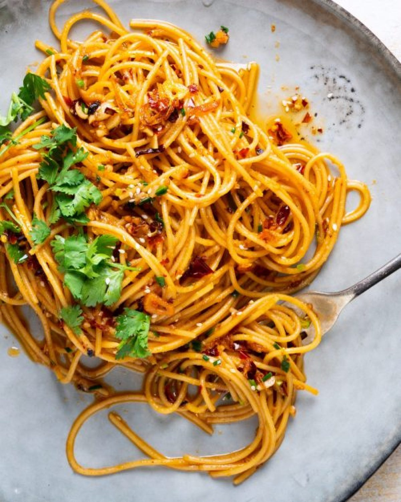

Back to Home
Garlic Pasta

Description
Chilli garlic pasta is a quick, spicy dish.
It is made by tossing al dente pasta in garlic and chilli-infused oil or butter. It comes in classic olive oil styles (aglio e olio e peperoncino), buttery chilli crisp versions, and Indo-Chinese fusion variations.
Ingredients(2 Servings)
- 200 grams spaghetti
- 4 garlic cloves, thinly sliced
- 3 tablespoons olive oil
- 1/2 teaspoon red chili flakes
- 1 teaspoon salt (for the pasta water)
- 60 milliliters pasta water, saved from the pot
Steps
- Boil pasta: Boil 200 grams spaghetti in salted water (1 teaspoon salt (for the pasta water)) until al dente. Save 60 milliliters pasta water, saved from the pot before draining.
- Fry garlic: While the pasta cooks, warm 3 tablespoons olive oil in a pan on low heat and cook 4 garlic cloves, thinly sliced with 1/2 teaspoon red chili flakes until the garlic is just golden.
- Toss and serve: Add the drained pasta and the pasta water to the pan, toss for a minute until glossy, and serve.